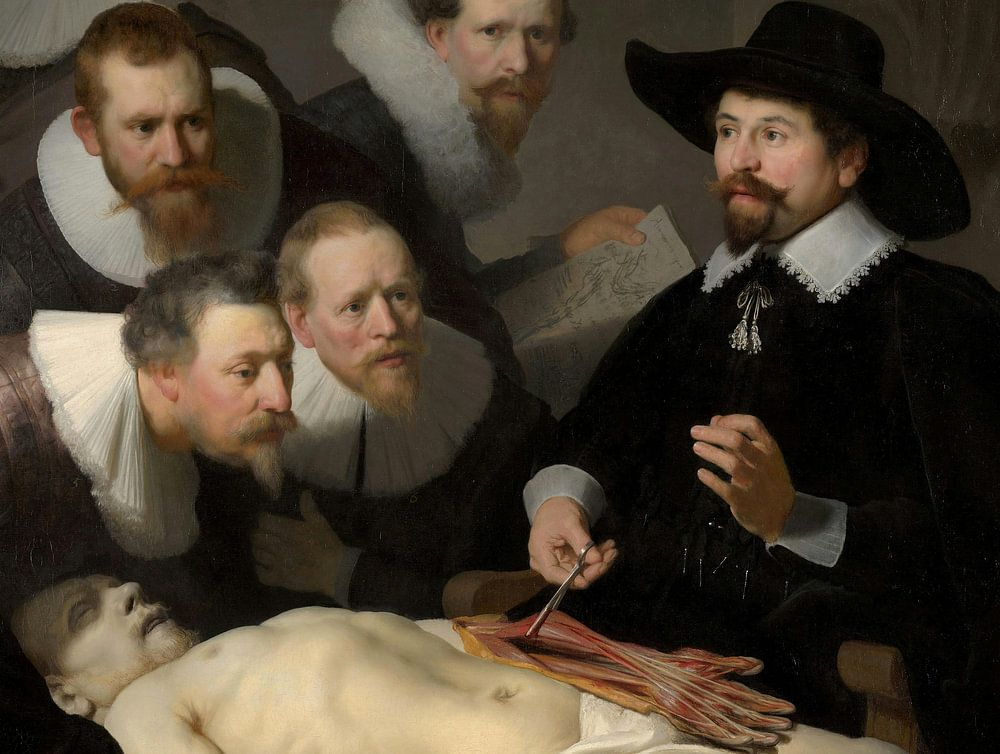

| Tulp | |
| Full Name: | Tulp, zoon van Nicolaas |
| Phantasar Name: | Tûlp, Fylo dâr Nycolas |
| Race: | Mens, later Fee |
Tulp, zoon van Nicolaas
Tulp is een als mens geboren Fee, uit de tijd van Nostramantu. Hij heeft zich toen hij leerde toveren vooral gericht op toverkust die vooral toepasbaar is op medische doeleinden. Tevens heeft Tulp ook als plaatsvervangend hoofd van Frendor opgetreden als de Feeënoudste zelf dit niet kon doen.
Inspiratie

Er is eigenlijk niet erg veel achtergrond te geven op Tulp, buiten dat ik een Fee nodig had die als medicus kon optreden, gezien het feit dat de situatie in het verhaal om de aanwezigheid van een medicus vroeg.
Het was hierbij alleen maar logisch dat wel degelijk ten minste één Fee zou zijn die zich op de medische kant van toverkunst zou hebben toegelegd.
Tulp, zoon van Nicolaas, is natuurlijk vernoemd naar Nicolaes Tulp, die vooral bekend is omdat hij tijdens een anatomische les, waarbij het het lijk gebruikte van een zojuist geëxecuteerde ter dood veroordelde, is vereeuwigd door de schilder Rembrandt van Rijn.
Het personage Tulp is verder niet op professor Tulp gebaseerd, hoewel er zeker nog een andere verwijzing naar Nicolaes Tulp in het zit, namelijk het feit dat hij als vervangend hoofd optreedt als de Oudste zelf de Feeën niet kan leiden. De echte Nicolaes Tulp is namelijk naast medicus ook politiek actief geweest. Hij is namelijk burgemeester geweest van Amsterdam. Dit maakte het voor mij wel makkelijk om hem aan te wijzen voor de functie van plaatsvervangend leidinggevende en hoefde ik er dus geen nieuw personage voor te creëren. Of je dit als luiheid ziet, of als een goede zet om geen onnodige overdaad aan personages te hebben, moet ieder voor zich maar uitmaken. 😝
Last updated on Sunday, May 19, 2024; 1:25:50 PM by Jeroen
Index